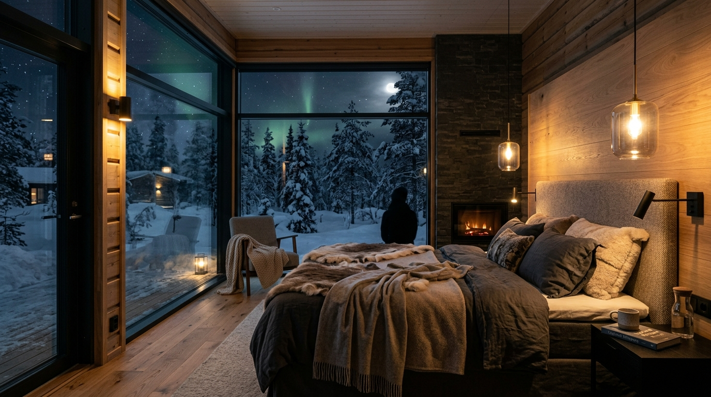

MERKKI 01 — LÄMMIN KÄYTTÖVESI JA SÄHKÖLASKU
Suihkuvesi haalenee ja sähkölasku hiipii ylös
Kun kompressorin puristusteho hiipuu, kuumakaasun tulistuskierukka ei enää saa täyttä 100 asteen lämpöä. Silloin sähkövastus kytkeytyy salaa päälle ja nostaa sähkölaskua.
Tyypillinen vaikutus+18–25 % sähkölaskuun